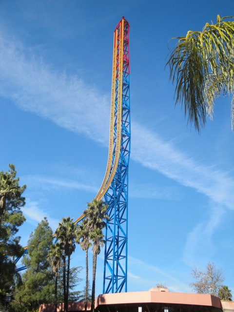
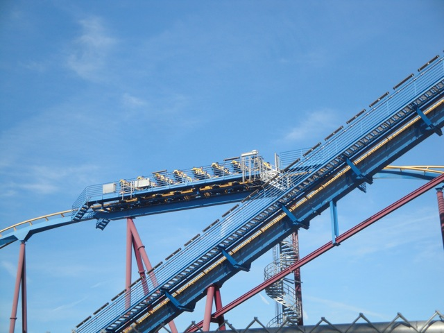
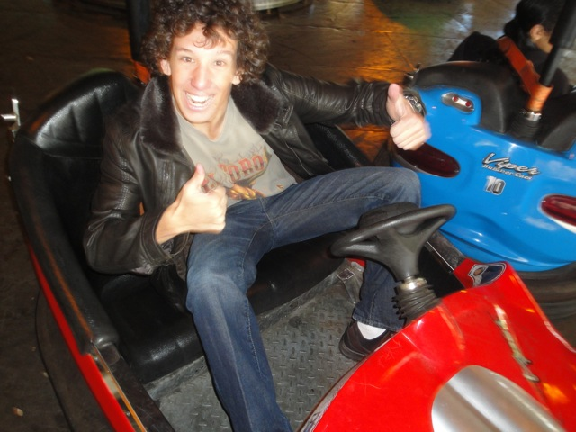
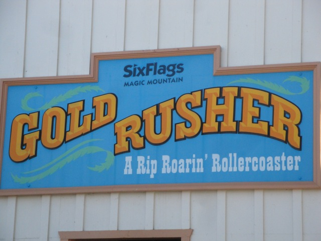
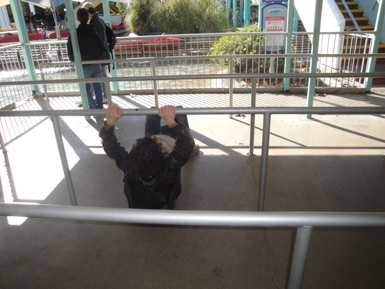
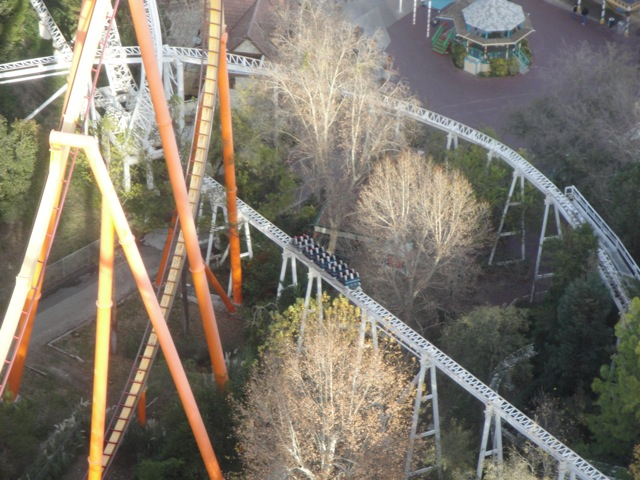
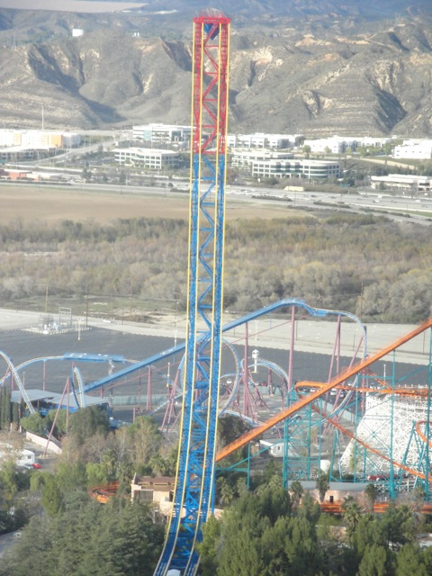
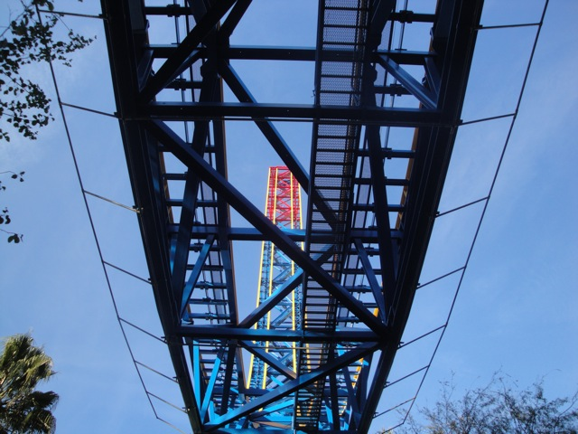

Incrediblecoasters New Years
Six Flags Magic Mountain Knotts Berry Farm
Well, our original New Years Eve Plan was to simply do the Rock'N'Ride New Years Event like last year. But thanks to budget cuts, they canceled that event, so we had to search for a new event. Then at the last minute, we thought it would be a good idea to do two different parks back to back in two different years. And so, it has begun. Oh, and Cody brought his friend Jen to SFMM to help her attempt to conquer her fear of roller coasters.

In other news, Superman's paint job is done.
 You know, at first I didn't really like the idea of colored Superman, but DAMN!!!! That paint job looks GREAT!!!!
You know, at first I didn't really like the idea of colored Superman, but DAMN!!!! That paint job looks GREAT!!!!
 All right. First up, let's take Jen on Goliath.
All right. First up, let's take Jen on Goliath.
 Unfortunetly, it didn't really help her get over her fear.
Unfortunetly, it didn't really help her get over her fear.
 In fact, we may have traumatized her. *whistles and walks away*
In fact, we may have traumatized her. *whistles and walks away*
 Yeah, we wer'nt able to talk Jen into getting on Collosus after Goliath.
Yeah, we wer'nt able to talk Jen into getting on Collosus after Goliath.
What's up with Scream? Why hasn't it come back to the station yet?

Oh, it got stuck on the mid course brakes. That explains a lot.

"Don't even think of hitting me!!! I'm armed with middle fingers and powerade!!!!"

We managed to drag Jen onto Goldrusher. However, she wasn't too fond of it.
I think Jet Stream may be more of Jen's style.

Who needs to walk through the lines when you can just slide under them.
Needless to say, a good time on Jet Stream was had by all.
Time for lunch at the Gas Station.
Just take the damn doughnut!!! We don't have all day here!!!!
Hello Mr. Gopher. Stay away from my doughnut or pay the price.
 Well, our mission to get Jen on X2 failed. But oh well. We had an amazing time anyway.
Well, our mission to get Jen on X2 failed. But oh well. We had an amazing time anyway.
Oh come on Jen!!! It's just Revolution!!! You can handle that!!!!

She didn't get on. =( But to be fair to her, it was smart of her to stay off Revolution since it was running HORRIBLY!!!!! I mean it was bad. Really bad.
All right. Up into the Sky Tower we go. (Oh, and Jen. Did I mention that the elevator drops like on Tower of Terror?)
You're doing it wrong.
Hey look. They've got some of Flashback's track up here. Oh the memories. That ride was horrible.
You know, after sitting in these cars, I can see why Cheese the ride got scrapped. You can't even fit in the cars.

Newly Painted Superman the Escape from the Sky Tower.
Well, I can see that they wrapped up the old cars. Now we just need to wait for the new ones.
Hell no. Not worth it.
 Once again, the single riders line saved our asses and allowed us to get on Riddlers.
Once again, the single riders line saved our asses and allowed us to get on Riddlers.

What's missing here?
We managed to take Jen on Swashbuckler.
Yay!!! Jen's riding rides!!!
Well, it's about time something filled Sierra Twist's spot. Now how come the park is fenced off?
 Yup. The Thomas Town liscening has officially left. It's no longer Thomas Town.
Yup. The Thomas Town liscening has officially left. It's no longer Thomas Town.
Good Bye Thomas. Hello random red train.
Me: "Good bye Sierra Falls. You were always a fun water ride. I enjoyed riding you and will miss you so dearly."
Sierra Falls: "Bullsh*t!! You never gave a damn about me!!! You almost never rode me and you didn't even remember to include me in the Water Rides section of your review of Six Flags Magic Mountain. You only feel sorry for me because I'm leaving. By the time you post this update, you'll have forgotten all about me while I roll in my grave. Hell, you didn't even notice when I was getting torn down!!!"
Me: "You know what, if you're going to act like this, then I'm glad you're getting the axe."
All right. Let's get this thing spinning like there's no tomorrow.
"OH COME ON!!!!!!!!!!!!!!"
Hate to be mean, but turning down Canyon Blaster is pretty pathetic. But oh well. That doesn't matter. What matters is that she had fun.
Lame. I can't soak Pink Sweater Girl like last year.
Why is that one fountain crooked?
Hey!!! I bought myself a Riddlers Cape to make me a superhero!!! Now I just need a giant fan to follow me around (Or a hurricane).
 Last coaster of 2010.
Last coaster of 2010.
Yep. I smell Budget Cuts.
Well, Six Flags Magic Mountain is closed. But hey. Let's go have some fun at the mall.
Lame. The mall closed right as we got there. So no Spinning Teacup Carousel for us. =(
Well, let's eat some In'N'Out while we're here. (Any fast food that serves my food animal style is Incrediblecoasters friendly.)
Well, after that, we just went back and hung out and just played Wii Play and watched the Nostalgia Critic for a while. Then we tried watching the ball drop. But being the dumasses we are, we didn't know what channel it was on. (And when you have satellite TV with like 200 channels, looking sucks.) We ended up on some stupid channel that was just some interviews and realized "CRAP!!! THIS ISN'T IT!!!!" We then kept looking and found it like 5 seconds into 2011, so we missed the ball drop because we're dumbasses. But oh well. Once you see one ball drop, you've seen them all. No big loss.
Happy F*cking New Year.
Knotts Berry Farm
Home